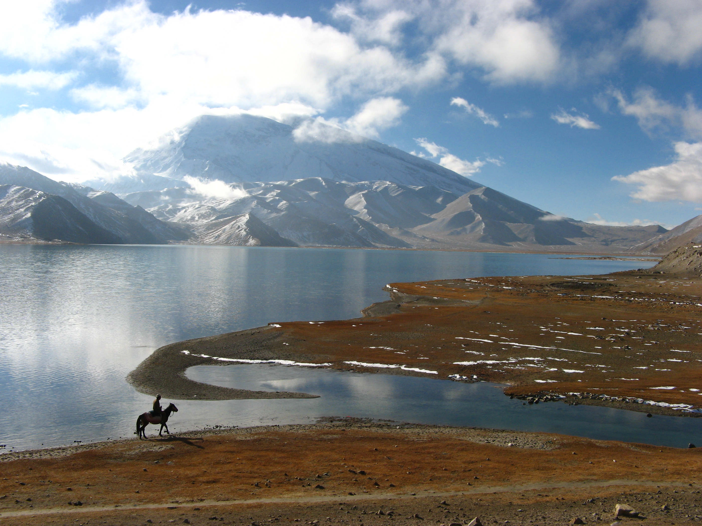

Jonathan S. Cohen
Photography, Design and Development


- 
About Me
I am currently a masters student at BU Metropolitan College studying Computer Information Systems. My interest include web design and development, programming, jogging, reading and photography.
Photography
In 2005-2006, I lived abroad in China and Israel. In China, I spent a fair amount of time in the remote far western provinces of Xinjiang, Tibet and Yunnan, focusing my photography on landscapes and scenery.
Contact Me
I'm looking for work in web design and development and if you're interested in that or the photography, drop me a line.